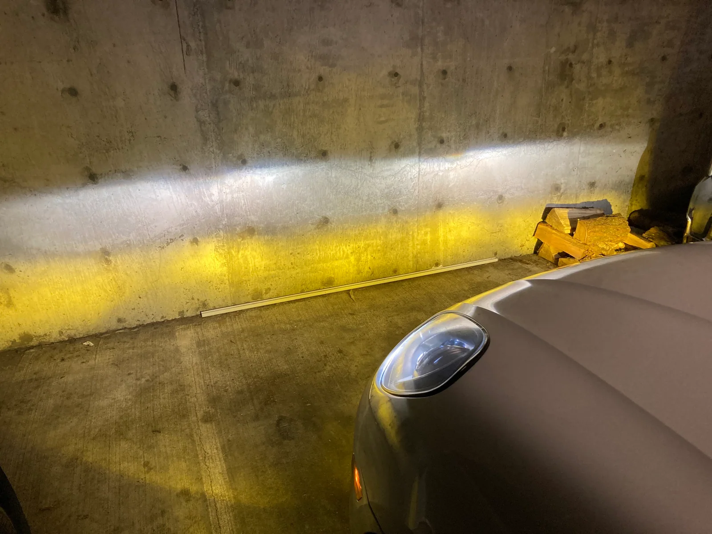
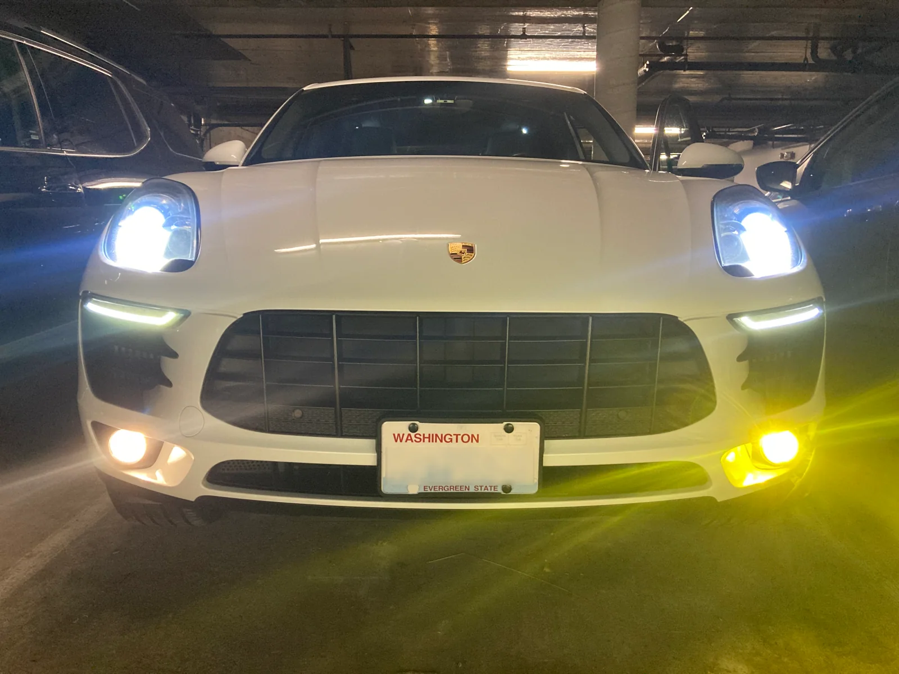
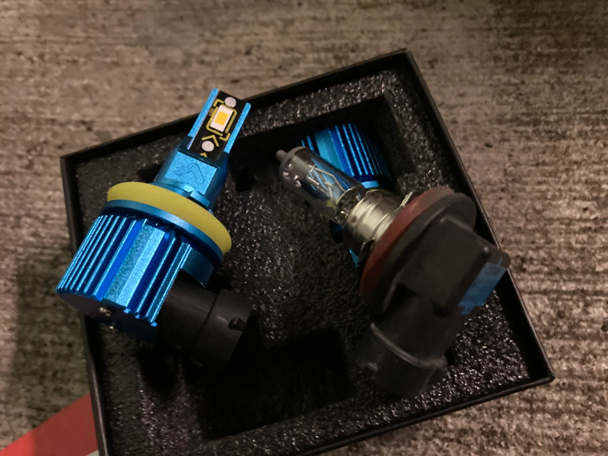

Updating Porsche Macan headlights to LEDs

Last year I purchased a 2016 Porsche Macan S. Many things about my Macan have aged well in the 6 years since it left the factory in Leipzig, Germany; but the decision to ship the car with mostly incandescent light bulbs was clearly a mistake. I remember thinking to myself as I was on the way to campsite deep in the forest that these low beams weren’t as strong as my prior car.
There are two main advantages to replacing the stock light bulbs with LEDs: improved light output and reduced power consumption. For the same amount of power consumed by an incandescent light bulb LEDs can be up to 6 times brighter. In most cases this efficiency improvement is split between increased light output measured in Lumens and reduced power consumption measured in Watts.
The Macan’s cornering lights highlight the advantages of LEDs. These lights are a part of the headlight assembly and are activated when you turn the steering wheel more than a quarter of a revolution. Typically, this happens when making 90 degree or more turns at low speeds. A direct replacement of the OEM lightbulb is the Sylvania SilverStar ULTRA H7. This bulb claims to produce 1,571 Lumens at 55 Watts of power, and they cost $82. The replacement LED bulb that I chose is the DMEX H7 which claims 4,000 Lumens at 30 Watts for $42. Taking both claims at face value, the LED option is ~2.5x brighter while drawing 40% less power and being half the cost. Hard to say no to something that’s both cheaper and better.
Changing Color Temperature

There is a caveat though, which is that LEDs do not match the color temperature of most stock light bulbs. Typically, they will be 6500k or 6000k in color temperature which cooler or bluer looking than the stock lighting. For low beams and high beams, you can often find options between 6500k and 3000k where 4500k is close to neutral and 3000k is yellow. It’s a shame that we have not yet seen ARGB offerings for LED replacement bulbs in the way we have with indoor LED lighting where the color temperature is user configurable.
For my Macan I found a set of bulbs to replace the low beams and high beams with a color temperature of 4300K as I prefer a more neutral white. The cornering lights are 6000K because there was only one option to choose from. The fog lights are 3000K as yellower lights are better in fog per Car and Driver and they are so rarely used that I think it’ll be a bit of a party trick.
Here’s where the comparison gets fun; let’s combine the light output and power consumption of the stock lighting based on incandescent replacement bulbs and compare those totals to the LEDs I installed in my Porsche.
Low/High Beams
- Sylvania D3S SilverStar zXe - 3.2k Lumen @ 35 Watts per bulb
- DMEX D3S - 3.8k Lumen @ 35 Watts per bulb
Cornering Lights
- Sylvania SilverStar ULTRA H7 - 1.6k Lumen @ 55 Watts per bulb
- DMEX H7 - 4k Lumen @ 30 Watts per bulb
Fog Lights
- Sylvania H11 SilverStar ULTRA - 1.3k Lumen @ 55 Watts per bulb
- DMEX H11 - 2.5k Lumen @ 17 Watts per bulb
It’s worth noting here that I am not including the running lights present in the headlight assembly because the four dots are already LEDs and non-replaceable. Additionally, I am not counting the running lights that sit below the headlight assembly as they are also a nonreplaceable strip of LEDs.

Totals
- Stock replacements - 12k Lumens @ 290 Watts
- My bulbs - 20k Lumens @ 164 Watts
- 63% more light output at 56% of the power consumption
For the low/high beam bulb I used a HID replacement rather than an LED, because the LED options were all 6500K in color temperature. Luckily for me those LED offerings claim similar performance; 4k Lumens for LED versus 3.8k for HID at the same 35 Watts of power consumption. I’m feeling charitable, so I’m calling this difference a rounding error and hand waving it away.
You may have noticed that all the LED bulbs I picked were from the DMEX brand on Amazon. This is because I like the build quality and pricing of these products. I purchased the D3S bulbs first and had no troubles. Then I picked up the H11 fog lights and enjoyed the blue aluminum body, so I decided to round things out with the H7 bulbs. I’ll update this after the winter season is over, but they’ve worked as expected so far. Although I get the impression that all these LED brands are interchangeable as is common for sub $100 items on Amazon.